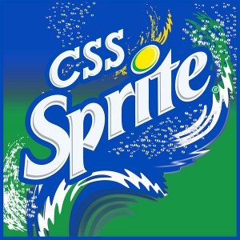

Les webperfs
pour les nuls
Timothée Carry
- Consultant Octo Technology
- Spécialiste en Web Front
- @pixelastic à l'extérieur
Pourquoi ?
Impact sur la marque
-
Utilisateurs de moins en moins patients
- Site lent au bout de 4s en 2008, 3s en 2014
- Nouvelle génération habituée à l'instantané
- Explosion du nombre de terminaux mobiles
-
Relation à l'image de marque
- Avantage concurrentiel si rapide
- Frustration reportée sur la marque si lent
Amazon perd 1% de ventes pour chaque tranche de 100ms de chargement
Serveur
Régime sans cookies
- Envoyé sur chaque requête
- Inutile pour les assets statiques
- Utiliser des sous-domaines cookieless
- Passer le tracking sur son propre sous-domaine
Un pour tous et tous pour un
- Concatener les assets de même type en un seul fichier
- 1 (ou 2) fichiers Javascript et CSS
Comment réduire la taille des requêtes ? Faites moins de requêtes.
Gzip all the things!
-
Gain de 66% en moyenne
- Gains plus importants sur des gros fichiers
- Compression favorisée par les conventions (attributs HTML, propriétés CSS)
-
Large spectre
- HTML / CSS / Javascript
- XML / JSON
- SVG / WOFF
Toujours permettre une version sans Gzip (proxies, vieux navigateurs)
Images
- Souvent le plus lourd sur une page, et de loin.
- Utiliser le bon format pour le bon usage.
JPG
- Pour les photos.
- Compression lossy ~ 80% à l'oeil nu (convert, jpegoptim).
- Compression lossless suppression metadatas (exiftool).
- Problématiques responsive/retina (hors scope).
GIF
- Palette de 256 couleurs.
- Un seul canal de transparence.
- Se compresse peu.
- ...
- Images animées

PNG
- Filesize plus léger que GIF.
- Plusieurs canaux de transparence.
- 256 couleurs pour PNG-8, infinité pour PNG-24.
- tinypng, pngquant, punypng, etc.
Attention
- Photoshop gère mal PNG-8.
- Pas supporté par IE8 (attention aux hacks).
Sprites

- Plusieurs images en une.
- Gain sur le nombre de requetes et sur la compression.
- On joue ensuite sur background-position en CSS.
Attention
- Nécessite des éléments de taille fixe.
Cache
Une fois téléchargé, inutile de le télécharger à nouveau. HTTP propose des mécanismes puissants pour gérer le cache, à deux niveaux. Au niveau du browser (ne lance la requete que si la date est expirée), ou au niveau du server (indique au serveur la dernière date, le serveur réponds avec une nouvelle version ou rien si la version actuelle est ok). Plusieurs mécanismes, je présente ceux que je préfère. Invalidation du cache, l'une des choses les plus difficile. Asset caché potentiellement par des proxies, firewalls, Plus simple de changer l'url. Timestamp de dernière génération dans l'url, md5 dans le nom, etc.Client
Humain
Questions ?
Annexes
Des ressources existent depuis longtemps
Des outils matures
Serveur
DNS, le goulet d'étranglement
- Passage obligatoire de toute requête
- Zone grise entre le client et le serveur
- Limite de connections simultanées coté client
- Peu de solutions (limiter le nombre de domaines)
Le CDN est la dernière étape, pas la première
- Souvent utilisé comme solution de facilité
- Gains plus importants sur les autres points
- À utiliser
Adaptez à votre cas de figure
- Etsy charge ses assets statiques depuis le même domaine que le site principal